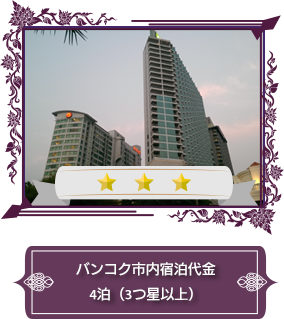
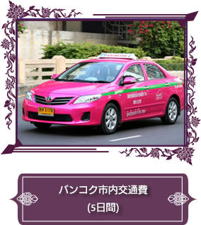
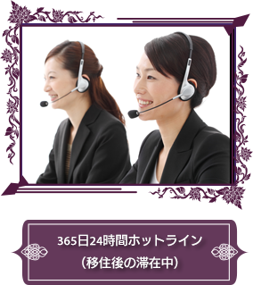

DD-THAILANDはタイ移住をサポートする会社です。
タイは移住、長期滞在の人気の場所です。
公式には2017年10月時点で8万人の日本人が住んでいます。（外務省のタイ在留届をもとにした統計）
実際はその倍近くの日本人がタイには住んでいるといわれています。
「微笑みの国」タイランドは日本人にとって一番住みやすい国といえるでしょう。
しかし、いざ長期滞在や移住をするとなると、情報などを集めるのは大変です。ビザの取得、住むところの選定、生活をスタートさせるためには意外と難関があります。
DD-THAILANDは事前準備の段階から豊富な情報をもとにお客様に合った移住をご提案します。その後の申請や現地の物件のご案内、お仕事探し、現地での生活までを一貫してサポートいたします。
DD-THAILANDは現地に日本人とタイ人のスタッフが常駐しております。いざ生活を始めてトラブルになったときも安心です。24時間のホットラインで安心です。
ご相談は無料です。

DD-THAILANDは出発前のご相談を無料で実施しております！幅広い情報収集がロングスティ成功の近道です。入念な準備がロングスティ成功の秘訣です。

出発前は日本においてタイ在住15年以上のスタッフがご相談、サポートをします。現地到着と同時に日本在住10年以上のタイスタッフがサポートいたします。タイスタッフは日本語が堪能で日本やタイでの通訳経験者が対応します。ご希望により日本人スタッフも同行いたします。

DD-THAILANDはタイ人と日本人のコラボレーション会社です。現地日系サポート会社にありがちな高額料金設定はありません。

DD THAILAND 基本サポート価格・・・バンコクとチェンマイで70,000円です。

日本国内相談
プラン提出まで無料

出国までのご相談
何回でも納得がいくまでご相談下さい。
ビザ申請相談、
海外保険加入アドバイス

タイ語会話マンツーマン
レクチャー（6H）

空港お迎え
(空港ホテル間交通費含)

居住選定サポート(内覧同行)
賃貸契約の立会

生活圏アテンド
(買い物、食事、病院)

日本大使館在留届など同行

銀行開設サポート

語学学校見学と申込み

現地就職の斡旋

携帯SIM購入と携帯設定
インターネット開設申請


※困ったときには無料でご相談ください。
同行通訳やアテンド対応が発生する場合は別途料金となります。
料金について